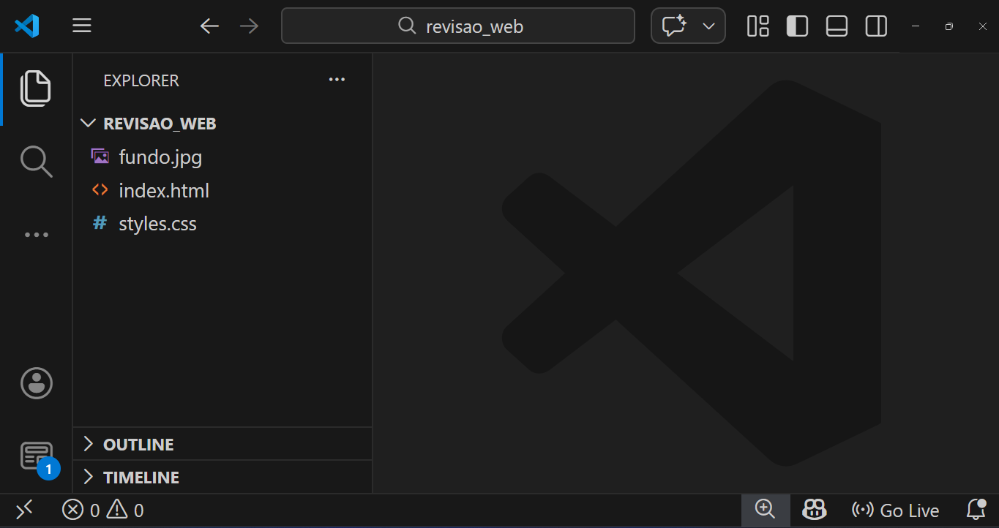

Revisão de Prova 1º Bimestre - 31/04/2026
Neste material, faremos uma revisão para a prova da disciplina Programação para Front-end, lecionada para a turma ADS3SNA do C.S.T em Análise e Desenvolvimento de Sistemas da Unicesumar. A prova será realizada de forma totalmente prática, e testará os seguintes conhecimentos dos alunos:
- Estrutura básica do HTML
- Utilização de divisórias
- Declaração de parágrafos
- Vínculos de arquivos de estilização de páginas (CSS)
- Seletores de classes
- Flex-layout
- Estilização de divs
- Estilização de texto
Resultado esperado
A revisão consiste em analisar um problema de um cliente, em que:
Necessita-se de uma página web responsável por exibir um card (
div) para conter uma mensagem que será enviada por whatsapp.ESPECIFICAÇÕES:
- A página não deverá ter margem e nem espaçamento interno;
- A cor de fundo da tela deverá ser verde-água (
aqua);- A
divcard deverá ter as dimensões 800x600 e estar centralizada na tela;- O fundo da
divcard deve usar a imagem de fundo disponível no link https://imgur.com/a/NqQelOa, e deve cobrir todo o espaço da disponível, sem repetir;- A mensagem deverá estar centralizada na
div, a corbrown, o tamanho20pxe o espaçamento interno de10px;
Estrutura básica do HTML
Para desenvolvermos a estrutura básica do HTML, utilizamos o editor de código Microsoft Visual Studio Code em conjunto com as extensões Prettier - Code formatter, Auto Close Tag e Live Server.
Após a configuração do editor de código, criaremos uma nova pasta onde armazenaremos os arquivos do site. Após adicionar, abrimos essa pasta como contexto do editor Microsoft Visual Studio Code.
Dentro da pasta, adicionaremos os arquivos index.html e styles.css, além de baixar a imagem fundo.jpg do link https://imgur.com/a/NqQelOa.

Acessando o arquivo index.html, adicionaremos a estrutura básica do HTML.
Você pode usar o snippet do HTML Sample digitando
!ouhtml:5e pressionando as teclasctrl+Enterpara adicionar a estrutura básica do HTML.
<!DOCTYPE html>
<html lang="en">
<head>
<meta charset="UTF-8">
<meta name="viewport" content="width=device-width, initial-scale=1.0">
<title>Document</title>
</head>
<body>
</body>
</html>
Em seguida, adicionaremos a div do card e o parágrafo do conteúdo dentro da tag body.
Você pode usar o seguinte snippet para adicionar a
divcom a classe e o parágrafo:.quadro>h1. Ao final, pressionectrl+Enterpara abrir a intelisense eEnterpara selecionar o snippet.
<div class="quadro">
<p>
Minha terra tem palmeiras, Onde canta o Sabiá; As aves,
que aqui gorjeiam, Não gorjeiam como lá. Nosso céu tem mais estrelas,
Nossas várzeas têm mais flores, Nossos bosques têm mais vida, Nossa vida
mais amores. Em cismar, sozinho, à noite, Mais prazer eu encontro lá;
Minha terra tem palmeiras, Onde canta o Sabiá. Minha terra tem primores,
Que tais não encontro eu cá; Em cismar –sozinho, à noite– Mais prazer eu
encontro lá; Minha terra tem palmeiras, Onde canta o Sabiá. Não permita
Deus que eu morra, Sem que eu volte para lá; Sem que disfrute os
primores Que não encontro por cá; Sem qu'inda aviste as palmeiras, Onde
canta o Sabiá.
</p>
</div>
Na tag head devemos adicionar a referência do arquivo de estilização styles.css. Para isso, escrevemos a tag link, colocando os atributos rel="stylesheet" e href="styles.css".
<head>
<meta charset="UTF-8" />
<meta name="viewport" content="width=device-width, initial-scale=1.0" />
<title>Document</title>
<link rel="stylesheet" href="styles.css" />
</head>
Estilizando a página com CSS
Iniciaremos a estilização dentro do arquivo styles.css resetando os valores de margem e espaçamento interno da página. Para isso, usamos o seletor * juntamente com as propriedades padding e margin, referentes a espaçamento interno e margem, respectivamente. Para ambas propriedades, o valor será 0.
* {
padding: 0;
margin: 0;
}
Para atendermos ao requisitos 1, 2 e 3, referentes à cor de fundo e a centralização da div de conteúdo, usaremos as seguintes propriedades no seletor body:
width: para definir o valor máximo de100vwna largura, que representa 100% da largura do viewport da janela do navegador.height: para definir o valor máximo de100vhna altura, que representa 100% da altura do navegador.background-color: para definir a cor de fundo com o valoraquadobody.display: para definir adivcom o flex-layout, essencial para as propriedadesalign-itemsejustify-contentfuncionarem corretamente.align-items: para definir o alinhamento no eixo central (vertical) da div com o valorcenter.justify-content: para definir o alinhamento no eixo cruzado (horizontal) da div com o valorcenter.
As propriedades
display: flex,align-items: centerejustify-content: centersão essenciais para fazer o alinhamento central de conteúdo numadiv.
body {
width: 100vw;
height: 100vh;
background-color: aqua;
display: flex;
align-items: center;
justify-content: center;
}
Para estilizar a div de conteúdo, utilizaremos o seletor da classe .quadro, e atribuiremos as seguintes propriedades:
border: Definiremos a margem, para que fique aparente. Utilizamos os valor1px solid black, para indicar a espessura, o tipo e a cor da margem, respetivamente.width: Definiremos a largura para o valor de600pxheight: Definiremos o valor da altura para480pxbackground-image: Responsável por definir uma imagem de fundo para o elemento. Utilizaremos a funçãourl("fundo.jpg")para associar a propriedade ao arquivofundo.jpgbaixado.background-repeat: Utilizaremos o valorno-repeatpara impedir que a imagem repita caso não tenha a mesmo dimensionamento dadiv.background-size: Utilizaremos o valorcoverpara indicar que a imagem cobrirá todo o espaço disponível do elemento. Obs.: Pode ser que a imagem distorça.display: Utilizaremos o valorflexpara indicar que essadivutilize oflex-layout. Nossa intenção é centralizar o parágrafo.align-items: para definir o alinhamento no eixo central (vertical) da div com o valorcenter.justify-content: para definir o alinhamento no eixo cruzado (horizontal) da div com o valorcenter.
.quadro {
border: 1px solid black;
width: 600px;
height: 480px;
background-image: url("fundo.jpg");
background-repeat: no-repeat;
background-size: cover;
display: flex;
justify-content: center;
align-items: center;
}
Por fim, formataremos o parágrafo. Como a intenção é afetar somente o parágrafo dentro da div, utilizaremos o seletor combinado para filhos (diretor e indiretos). Sendo assim, especificamos o seletor .quadro p.
Caso quiséssemos afetar somente o parágrafo filho direto da div, poderíamos utilizar o seletor
.quadro > p.
As seguintes propriedades foram indicadas:
color: Utilizamos o valorbrownpara indicar a cor do conteúdo do parágrafo com o valor marrom;text-align: Justificamos o conteúdo de texto do parágrafo com o valorjustify;padding: O espaçamento interno foi definido com o valor10px;font-size: Definimos o tamanho da fonte para20px;-webkit-text-stroke: (OPCIONAL) Utilizado para definir a largura e a cor do contorno de caracteres de texto. Definimos o valor2px black, sendo este a cor do contorno e aquele a largura do contorno.
A propriedade
-webkit-text-strokenão é padronizada, e funciona em apenas alguns navegadores. Você pode buscar mais informações neste link: -webkit-text-stroke.
.quadro p {
color: white;
padding: 35px;
text-align: justify;
font-size: 20px;
-webkit-text-stroke: 1px black;
}
Conclusão
Nesta revisão de prova, revisitamos conceitos importantes sobre a estruturação básica de uma página HTML, utilizando elementos básicos como div e o parágrafo p. Também vimos como vincular um arquivo de estilização de páginas em CSS ao arquivo HTML utilizando a tag link. Por fim, estilizamos toda a página centralizando elementos, definindo cores e imagens como planos de fundo.